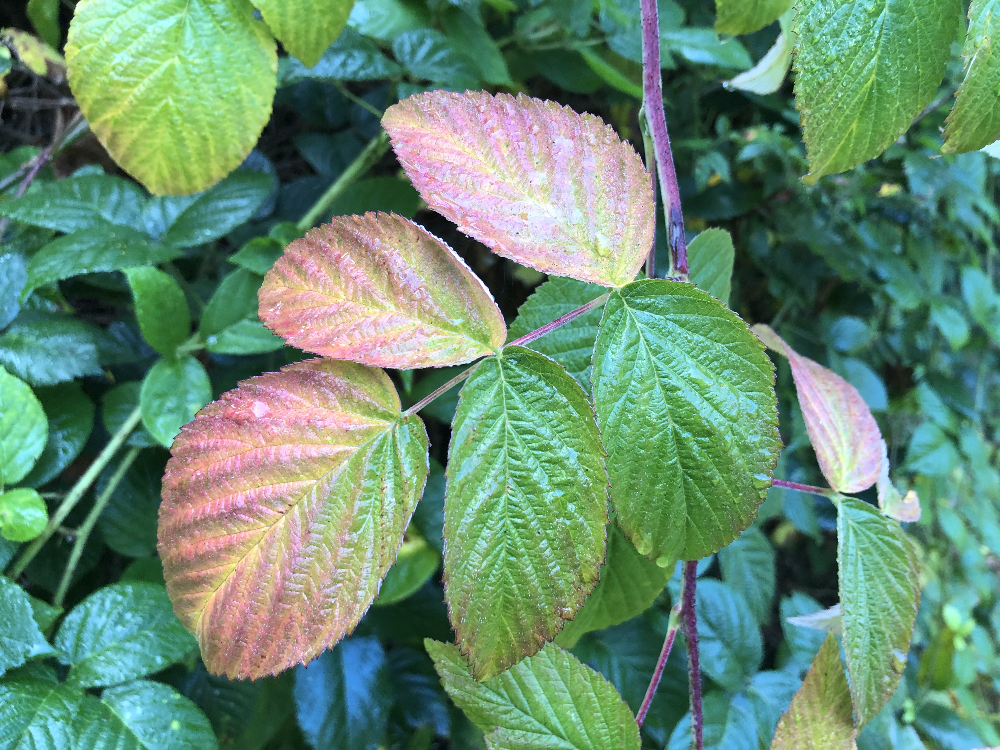
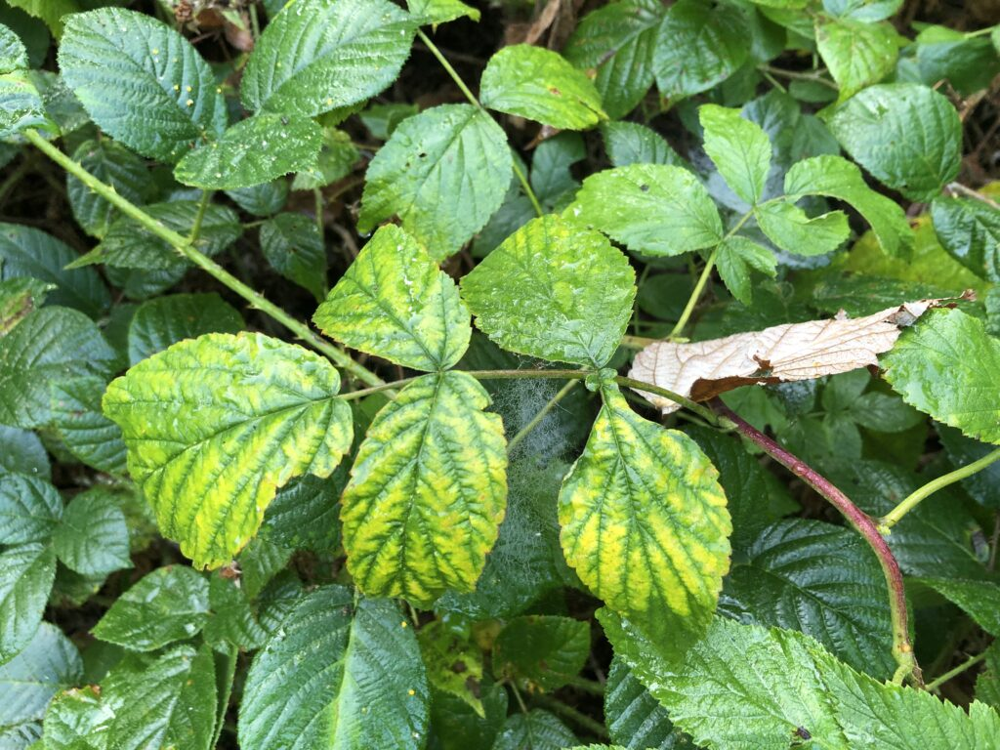
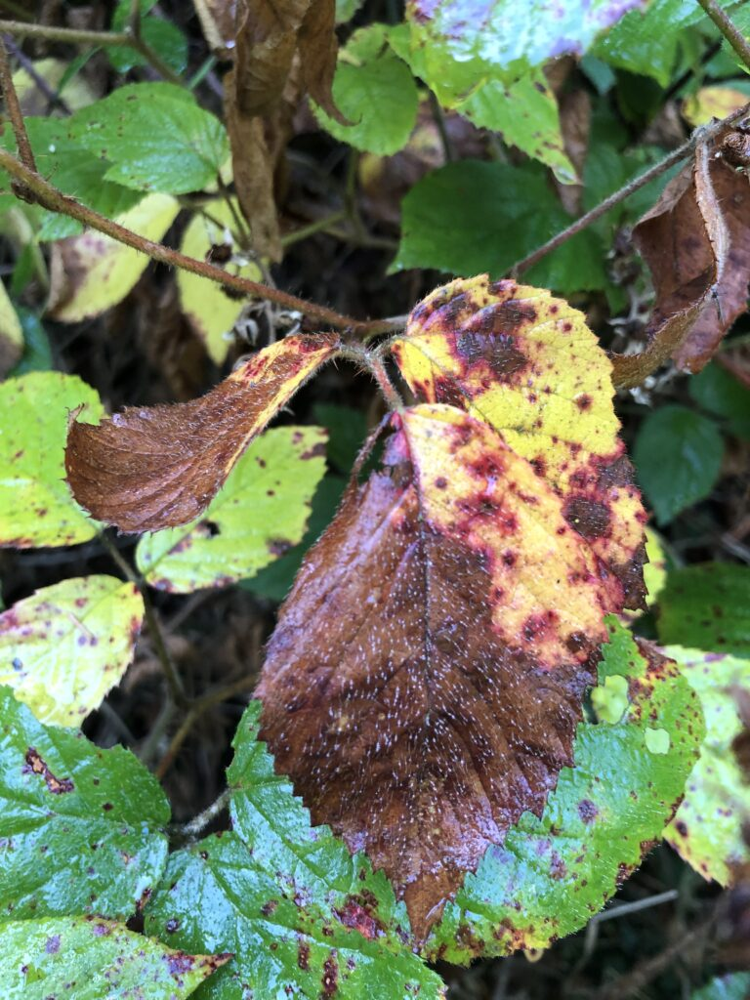
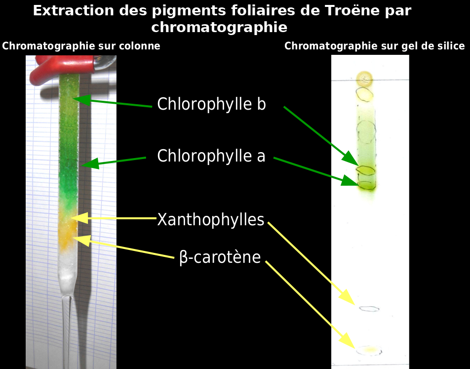

Les feuilles des arbres tombent et changent de couleur…on est bien en automne !
La chute des feuilles, ou abscission foliaire, est un phénomène particulièrement visible à l’automne en région tempérée. Elle concerne les plantes ligneuses (arbres, buissons) à feuilles caduques. En fait, toutes les plantes perdent leurs feuilles. Seulement, ça ne se voit pas pour les arbres à feuilles persistantes…sauf à regarder au sol dans une forêt de conifères par exemple : le tapis d’ « aiguilles », qui sont des feuilles, témoigne d’une abscission foliaire permanente, mais étalée dans le temps. Pour les arbres caducifoliés, la chute est synchronisée avant l’entrée dans la « mauvaise saison », l’hiver.
Notons que l’abscission peut également être déclenchée par des événements de forte sécheresse, comme lors des mois d’août 2022 et 2023. Un mécanisme de défense de la plante, face à la perte d’eau.
Qu’est-ce qui déclenche la chute ?
En automne, plusieurs paramètres du milieu changent : les températures diminuent, la durée du jour également : on passe d’une période dite de jours longs, à une période de jours courts. On appelle photopériode, la durée du jour par rapport à celle de la nuit. Elle se définit par deux chiffres, par exemple 16-8 correspond à 16h de jour et 8h de nuit, ce qu’on a plutôt en été (jours longs). 12-12 est la photopériode de l’équinoxe, fin septembre.
Pour savoir quel paramètre cause la chute des feuilles, il faut en isoler un et voir quelles en sont les conséquences. Par exemple, on constate qu’un arbre sous serre perd ses feuilles plus tardivement que le même arbre à l’extérieur. Le paramètre température a été isolé, puisqu’on maintient des températures douces sous serre. Le fait que les feuilles tombent plus tard indique que ce paramètre joue un rôle, mais ce n’est pas le seul.
La photopériode semble être le principal facteur responsable de l’abscission foliaire chez les arbres de région tempérée.
L’arbre est donc capable de percevoir son milieu…
Tout organisme vivant est capable de se nourrir, de se reproduire, et d’interagir avec son milieu. Les plantes ne font pas exception : elles ont des capteurs recevant les informations du milieu (des stimulus), à l’origine d’une réponse de l’organisme.
Des capteurs : les pigments
Pour percevoir une variation de photopériode, il faut des capteurs de lumière : les pigments. Les plantes ont plusieurs types de pigments, chacun responsable de fonctions spécifiques. Parmi eux, les fameuses chlorophylles (il en existe plusieurs, chlorophylles a, b…), responsables de la fonction de nutrition, par photosynthèse. En captant l’énergie lumineuse, elles assurent la production de matière organique pour la plante, à partir du CO2 prélevé dans l’air, et de l’eau prélevée dans le sol.
D’autres pigments sont responsable du captage de l’information lumineuse (et non de son énergie), comme les phototropines à l’origine de la croissance orientée de la plante (phototropisme) : si cette lumière est latérale, alors la croissance de la plante sera modifiée, dirigée vers la source de lumière. Cela permettra d’optimiser le captage d’énergie lumineuse par les chlorophylles, et donc la photosynthèse. Le rythme circadien (alternance jour/nuit) est lui capté par des cryptochromes.
Des messagers : les hormones
Les hormones animales sont bien connues, ces messagers chimiques qui transitent par le sang, comme l’insuline, la testostérone ou le cortisol. Les plantes aussi ont des hormones ! Elles transitent par les sèves ou directement à travers les parois cellulaires (par voie apoplasmique). L’auxine (AIA pour acide indole-3-acétique) est souvent connue des jardiniers, car elle est utilisée pour stimuler la croissance racinaire des boutures. L’éthylène, une hormone gazeuse de formule C2H4, est l’hormone impliquée dans l’abscission foliaire.
La découverte du rôle de cette hormone dans l’abscission est partie d’un constat simple : au début du 20ème siècle, les rues de certaines villes étaient éclairées avec des lampadaires à gaz de charbon. On remarqua que les arbres situés au voisinage de ces lampadaires perdaient leurs feuilles prématurément. On a ensuite fait le lien avec un composé dégagé par la combustion incomplète du gaz de charbon : l’éthylène.
Depuis, de nombreux autres travaux ont montré l’implication de l’éthylène pour d’autres phénomènes, comme la maturation des fruits (pourquoi dit-on qu’il faut placer des fruits à côté de pommes ou de bananes pour accélérer leur mûrissement ? car ces fruits produisent de l’éthylène ! ).
Quel est l’intérêt pour la plante de perdre toute cette matière ?
L’hiver, en région tempérée, est à l’origine de deux problèmes :
- le gel : en formant des cristaux de glace, l’eau solide perce les membranes des cellules, qui se détruisent. C’est aussi le cas de la salade que vous laissez dans un frigo trop froid…ses feuilles sont toutes molles, par éclatement de ses cellules.
La sève aussi peut geler. Et lors du dégel, au printemps, des bulles de gaz se forment, entraînant un arrêt de la circulation des sèves, c’est l’embolie hivernale. La montée de sève nécessite en effet une colonne de liquide continue, non interrompue. C’est un phénomène proche de la capillarité. - la sécheresse : aussi étonnant que cela puisse paraître, l’hiver est une saison où l’eau n’est pas disponible pour les plantes. La neige et la glace sont bien présentes, mais ne peuvent pas être absorbées par les racines. L’hiver est donc une saison sèche ! Or la plante présente une surface de contact avec l’air très importante, à cause de toutes ses feuilles. Chaque feuille est criblée de petites « bouches », les stomates, à travers lesquels (on dit « un » stomate) l’eau de la plante, la sève brute, sort. Il est donc nécessaire pour la plupart des plantes de conserver un minimum d’humidité dans le sol pour permettre cette transpiration foliaire.
Face à une contrainte, un organisme peut répondre de 3 façons :
- FUIR . Comme les oiseaux migrateurs ! Un arbre n’a pas vraiment cette possibilité…par contre la disparition des parties aériennes des petites plantes, qui se maintiennent dans le sol par leurs seules graines ou bulbes ou rhizomes, fuient le gel, en se réfugiant dans un environnement protégé.
- RÉSISTER = se défendre : la chute des feuilles est une façon de résister au gel et à la déshydratation. Chez certains animaux (lézards, grenouilles), l’accumulation de protéines antigel permet au sang de continuer de circuler (lentement tout de même…) alors que l’organisme a une température proche de 0°C !
- TOLÉRER : l’organisme subit la difficulté. C’est le cas des arbres à feuilles persistantes. Chez les Conifères, les sèves circulent dans des vaisseaux plus petits, moins sensibles à l’embolie hivernale lors du dégel ; et les pertes d’eau sont moindres du fait d’une circulation plus lente dans les tissus conducteurs, pourvus de cellules plus petites (des trachéïdes, et non des vaisseaux de gros diamètre). Chez le Houx, la cuticule épaisse hydrophobe des feuilles freine fortement la transpiration lorsque les stomates sont fermés, ce qui participe également à la tolérance à la déshydratation.
Attention au finalisme… (cf. l’article « Pour et pourquoi, deux mots interdits en biologie » ! ) La plante ne réfléchit pas pour savoir quelle est la meilleure stratégie pour vivre !
Remontons un peu dans le temps, à l’époque où les ancêtres des plantes à feuilles caduques ne perdaient pas leurs feuilles (ou du moins, pas de façon synchronisée). Certains individus, par hasard, ont perdu la plupart de leurs feuilles à l’entrée de l’hiver (car nous sommes tous différents au sein d’une même espèce, certains individus ne font pas comme les autres !). Lors du printemps, ces plantes avaient mieux résisté au gel et à la sécheresse : elles ont pu refaire de nouvelles feuilles, et l’énergie économisée grâce à l’absence de gel des feuilles, et d’embolie gazeuse dans les tissus conducteurs, a permis d’en dépenser plus dans la reproduction ! Plus de fleurs produites, plus de graines, plus de nouvelles pousses l’année d’après. Si la perte des feuilles a une origine génétique (une mutation), alors tous les descendants ont hérité de cette mutation, et ont eu le même comportement. De générations en générations, cette stratégie s’est imposée en régions tempérées. C’est la sélection naturelle.
Avant de tomber, les feuilles se modifient : elles changent de couleur
La dégradation de la feuille qui précède la chute est la sénescence foliaire. Parfois, les feuilles restent sur l’arbre, on les dit « marcescentes » (regardez les chênes ou les charmes lors de votre prochaine sortie en forêt l’hiver…). La sénescence foliaire se voit pas le changement de couleur.
Feuilles de ronce (Rubus fruticosus, Rosacée) en sénescence.


Noter le contraste de couleur entre les nervures bien vertes, et les zones entre les nervures jaunes, indiquant différent stades de recyclage

On peut distinguer essentiellement deux origines à ces changement de couleur :
- La dégradation de certains pigments, comme les chlorophylles, qui sont récupérées par le reste de la plante pour être recyclées. La feuille devient dépourvue de ces pigments verts…ce qui démasque d’autres pigments présents dans la feuille mais moins visibles : les caroténoïdes, jaunes et oranges.
La diversité de pigments d’une feuille peut facilement être mise en évidence par chromatographie. Une technique qui sépare les pigments sur la base de leur propriétés chimiques : solubilité dans le solvant (phase mobile) et affinité pour le support solide (phase fixe, qui peut être de la cellulose, de la silice…).

- L’accumulation de nouveaux pigments (rouges surtout, comme les anthocyanes) et de tannins. Une fois au sol, la feuille va petit à petit devenir marron : un couleur obtenue par des complexes formés entre les tannins et d’autres molécules de la feuille. C’est la même couleur que l’on obtient lorsqu’on coupe un fruit frais (une pomme noircit ! )
Aparte sur les tannins : Utilisés depuis longtemps pour la fabrication du cuir.
Ces composés se lient aux protéines de la peau (le collagène), augmentant sa résistance à la chaleur, à l’eau (les tannins sont hydrophobes) et aux attaques microbiennes.
Les plantes en produisent de grandes quantité dans le bois (couleur marron du tronc), les fruits. Ce sont les tannins qui rendent un vin astringent : ces molécules captent tout ce qui les entoure…dont les protéines de notre bouche ! On retrouve également des tannins dans le thé, qui colore le fond du bol.
Pourquoi ces changements de couleur ?
- On l’a dit, la disparition des chlorophylles est liée à leur recyclage, elles partent dans les sèves et leur matière sera réutilisée au printemps suivant.
- L’accumulation d’anthocyanes et de tannins assurent protection de la feuille vis-à-vis du froid et de la lumière, le temps que la matière de la feuille soit recyclée. Des travaux ont montré que la production d’anthocyanes améliore l’activité photosynthétique de la feuille, le temps que ses composés soient recyclés (1)
- Les tannins ont sans doute un rôle également dans la redistribution des minéraux dans le sol, après que la feuille est tombée (économie circulaire). Au contraire, l’absence de tannins entraînerait une consommation rapide des feuilles par des champignons et autres Insectes, qui appauvrirait le sol en minéraux.
Pour en savoir plus :
- Sur le rôle de protection des anthocyanes et des tannins : Hoch et al., Anthocyanins Provide Resorption Protection in Autumn Leave, Plant Physiology, November 2003, Vol. 133, pp. 1296–130
- Sur le rôle des tannins dans la décomposition des feuilles tombées au sol : Nicolai, V. Phenolic and mineral content of leaves influences decomposition in European forest ecosystems. Oecologia 75, 575–579 (1988). https://doi.org/10.1007/BF00776422
- Sur le recyclage de la matière organique lors de la sénescence : Anne Maillard et al., Leaf mineral nutrient remobilization during leaf senescence and modulation by nutrient deficiency. Frontiers in Plant Science May 2015 | Volume 6 | Article 317